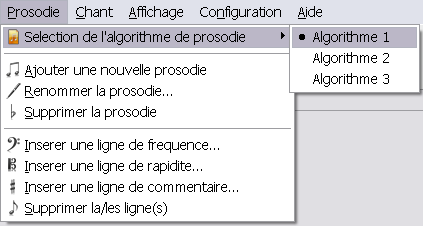

Le logiciel VOCALYSE SIVOX propose plusieurs algorithmes de prosodie qui donnent une intonation différente. Vous pouvez sélectionner l'algorithme de votre choix en cliquant sur Prosodie > Selection de l'algorithme de prosodie...

Lors de la synchronisation avec le texte, l'algorithme sélectionné sera appliqué sur l'ensemble des phonèmes (élément phonétique).